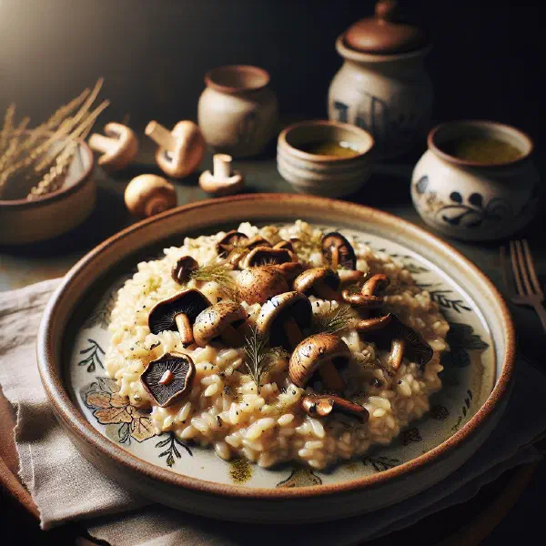

Stuffed Pita with Spiced Chickpeas & Halloumi

Silky, slow-stirred arborio rice with golden mushrooms, white wine, garlic and thyme, finished with butter and parmesan-style cheese.
Prep time: 15 minutes. Cook time: 40 minutes. Total: about 55 minutes. Serves 4.
Ingredients
- 1.2 liters hot vegetable stock
- 2 tablespoons olive oil, divided
- 40 grams unsalted butter
- 400 grams mixed mushrooms (chestnut, button, oyster), sliced
- 1 medium onion, finely diced
- 3 garlic cloves, finely chopped
- 300 grams arborio or carnaroli rice
- 150 milliliters dry white wine
- 1 tsp fresh thyme leaves
- 50 grams vegetarian parmesan-style cheese, finely grated
- 1 teaspoons salt
- 0.5 teaspoons black pepper
- 2 tbsp chopped fresh parsley
- 1 teaspoons lemon juice
Process
- Warm the stock: Pour the 1.2 liters hot vegetable stock into a saucepan and keep it at a gentle simmer on a back burner. Warm stock keeps the rice cooking evenly.
- Brown the mushrooms: Heat 1 tbsp of the 2 tablespoons olive oil, divided and 10g of the 40 grams unsalted butter, divided in a large wide pan over high heat. Add the 400 grams mixed mushrooms (chestnut, button, oyster), sliced in a single layer (in two batches if needed) and cook without stirring too much until deeply golden. Season with a pinch of 1 teaspoons salt, then transfer to a plate.
- Soften the onion and garlic: In the same pan, add the remaining oil and 15g of the butter over medium heat. Cook the 1 medium onion, finely diced with a pinch of salt until soft and translucent, then add 3 garlic cloves, finely chopped and cook for 1 more minute.
- Toast the rice: Add the 300 grams arborio or carnaroli rice and stir for 1 to 2 minutes until the edges turn translucent and the grains are glossy. This toasting step helps the rice hold its shape.
- Deglaze with wine: Pour in the 150 milliliters dry white wine and stir until it has almost fully absorbed and the sharp smell has cooked off.
- Add stock gradually: Add a ladleful of hot stock and stir often over medium heat. When it is nearly absorbed, add another. Continue until the rice is creamy and just tender with a slight bite. Stir in 1 tsp fresh thyme leaves halfway through.
- Finish and rest: Return the mushrooms to the pan with any juices. Take off the heat and beat in the remaining butter, 50 grams vegetarian parmesan-style cheese, finely grated, 0.5 teaspoons black pepper, 1 teaspoons lemon juice and a little more stock if needed. The risotto should flow slowly when you tilt the pan. Cover and rest for 2 minutes
- Serve: Taste and adjust the seasoning. Spoon into warm bowls, scatter with 2 tbsp chopped fresh parsley and extra cheese, and serve immediately.
Notes
Tips: Don't rinse the rice, since the surface starch creates the creaminess. Brown the mushrooms in batches so they sear rather than steam. Risotto waits for no one, so serve it as soon as it is rested.
Vegetarian note: traditional Parmigiano Reggiano uses animal rennet, so choose a vegetarian hard cheese or Grana Padano alternative labelled suitable for vegetarians.
Variations: stir in a spoonful of mascarpone for extra richness, add dried porcini (soak in hot water and use the liquid as part of the stock) for deeper flavour, or finish with truffle oil. For vegan, use olive oil instead of butter and nutritional yeast instead of cheese.